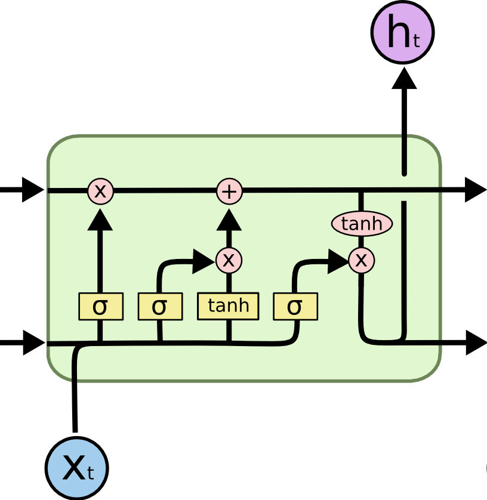
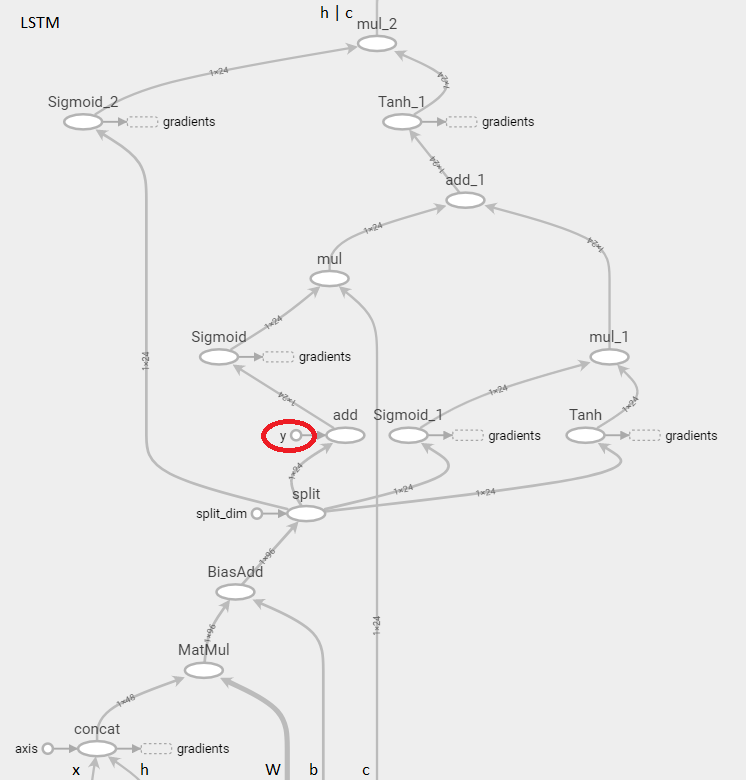
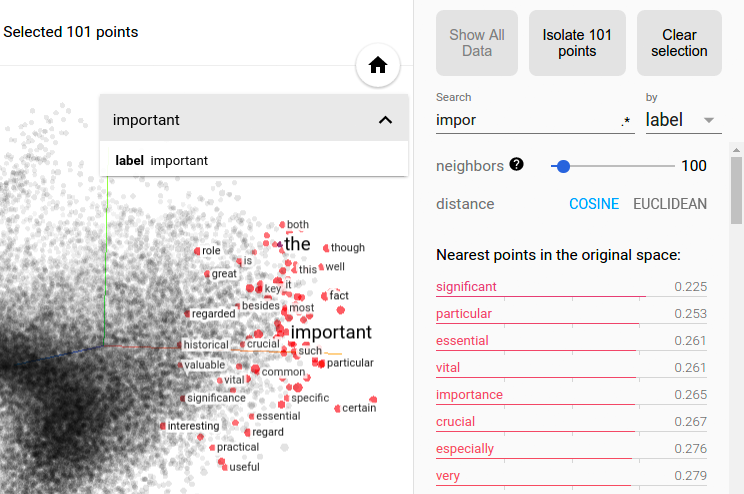

LTSM recurrent neural network working at character level trained on Javascript code. Try typing code in the text area below and see what it predicts as the next character. Typical things it recognized well : a few keywords function, this or return and vocabulary length, data or color, common structures for (var i=0; i<n; i++), and a bit of indentation (with detection of minified mode).
Next character prediction:
"Pick randomly" : pick sampling uniformly in the cumulative distribution.
Screenshot below from Tensorboard :
This calculation graph is a Tensorflow LTSM cell. It is almost a direct transcription of formulas in Wikipedia article (and other sources).
But what is the y additive term highlighted in red ?
|
Wikipedia formulas and C. Olah graph: \[ \begin{align} f_t &= \sigma_g(W_{f} x_t + U_{f} h_{t-1} + b_f) \\ i_t &= \sigma_g(W_{i} x_t + U_{i} h_{t-1} + b_i) \\ o_t &= \sigma_g(W_{o} x_t + U_{o} h_{t-1} + b_o) \\ c_t &= f_t \circ c_{t-1} + i_t \circ \sigma_c(W_{c} x_t + U_{c} h_{t-1} + b_c) \\ h_t &= o_t \circ \sigma_h(c_t) \end{align} \] |  |
Tensorboard version:

An embedding is a mapping of each of possibly many possible input (char or words) onto a vector of smaller dimension used as neural network input. It is akin a PCA, where the factors are such that the subsequent classification or regression works best.
Embedding of present character level RNN looks like below:
... which is instructive but nowhere as nice of word level or even image level embedding visualisation:

Refs:
Next: